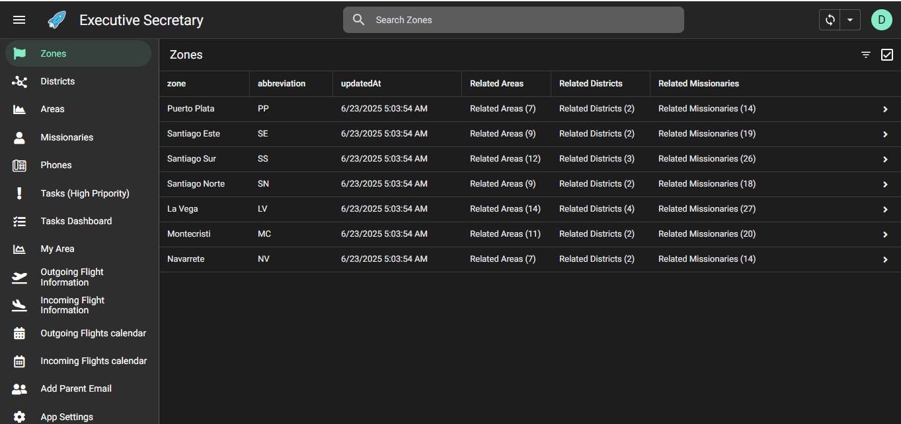

<h2>Tasks</h2>
<p>The <strong>Tasks</strong> Allow you to keep track of your daily activities.</p>
<ul>
  <H1>There are two important views to see your Tasks</H1>
  <li>See all important pending Tasks   </li>
  <li>Click any widget to see details.</li>
</ul>
<!--  -->